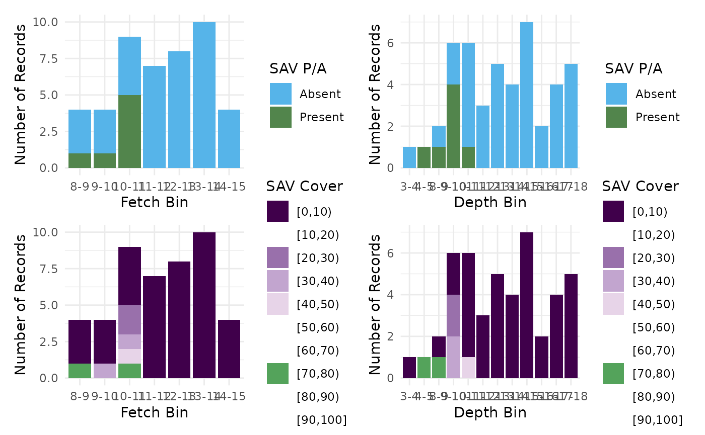
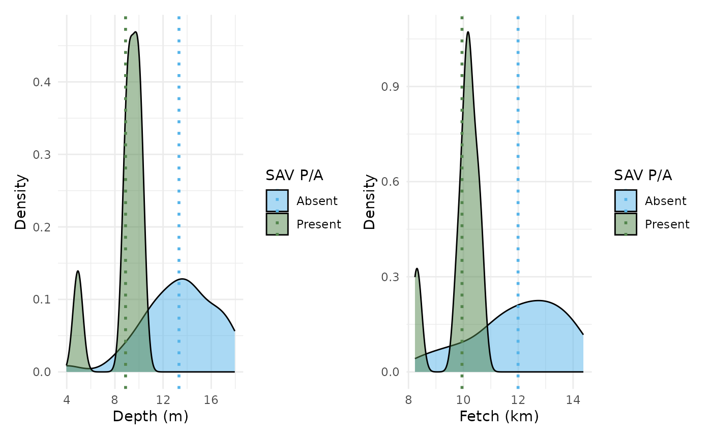
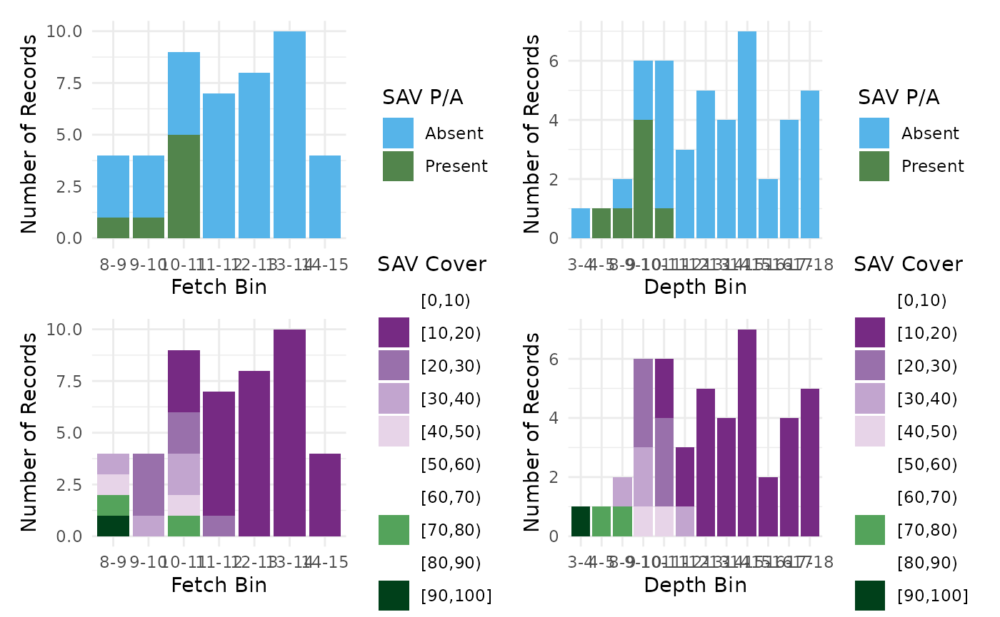
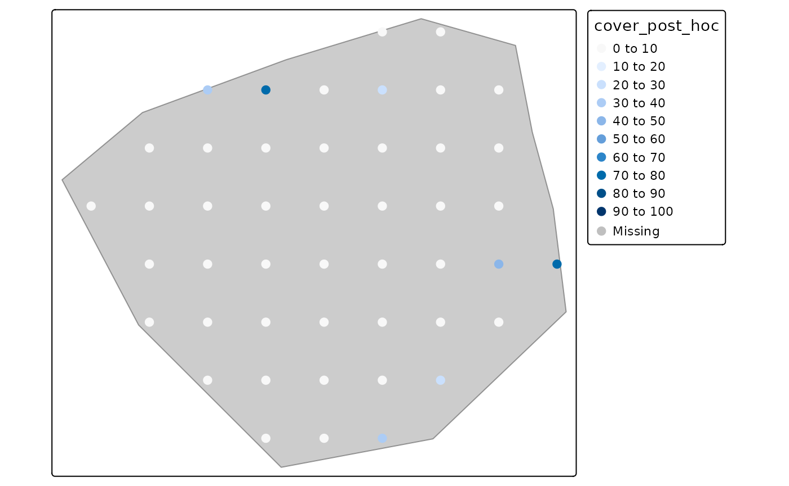

library(SAVM)
#> Loading required package: randomForest
#> randomForest 4.7-1.2
#> Type rfNews() to see new features/changes/bug fixes.
library(sf)
#> Linking to GEOS 3.12.1, GDAL 3.8.4, PROJ 9.4.0; sf_use_s2() is TRUE
library(stars)
#> Loading required package: abindIntroduction
This vignette provides an overview of the workflow offered by the Submerged Aquatic Vegetation Model (SAVM) R package. The package allows users to import spatial and tabular data related to SAV presence and habitat conditions in aquatic ecosystems. The presented in this vignette provide an overview of the functionalities built into the package and presents a workflow from user input to model predictions.
User workflow
R as a GIS
To use SAVM, basic knowledge about using R to work with spatial
objects. There are several packages that turn R into a powerful
Geospatial Information System (GIS). One of the most popular is sf, which can
read a wide variety of spatial file formats, including ESRI shapefiles.
Assuming you have the following shapefile files:
lake_erie_land
├── LkErie_Land_fromGLAF_Water_WGS_Feb2020.cpg
├── LkErie_Land_fromGLAF_Water_WGS_Feb2020.dbf
├── LkErie_Land_fromGLAF_Water_WGS_Feb2020.prj
├── LkErie_Land_fromGLAF_Water_WGS_Feb2020.sbn
├── LkErie_Land_fromGLAF_Water_WGS_Feb2020.sbx
├── LkErie_Land_fromGLAF_Water_WGS_Feb2020.shp
├── LkErie_Land_fromGLAF_Water_WGS_Feb2020.shp.xml
└── LkErie_Land_fromGLAF_Water_WGS_Feb2020.shxthen
st_read(lake_erie_land/LkErie_Land_fromGLAF_Water_WGS_Feb2020.shx)
is used to read the shapefile into a sf object used to do
spatial operations with R. For instance, the shapefile can be plot as
follows:
#> Reading layer `LkErie_Land_fromGLAF_Water_WGS_Feb2020' from data source
#> `/home/runner/work/_temp/Library/SAVM/example/lake_erie_land/LkErie_Land_fromGLAF_Water_WGS_Feb2020.shx'
#> using driver `ESRI Shapefile'
#> Simple feature collection with 1 feature and 8 fields
#> Geometry type: MULTIPOLYGON
#> Dimension: XYZ
#> Bounding box: xmin: -83.58067 ymin: 41.30372 xmax: -78.72656 ymax: 42.99789
#> z_range: zmin: 0 zmax: 0
#> Geodetic CRS: WGS 84The package SAVM includes a util function to invert a
polygon.
erie_lake <- erie_land |>
invert_polygon()
#> although coordinates are longitude/latitude, st_difference assumes that they
#> are planar
#> Warning: attribute variables are assumed to be spatially constant throughout
#> all geometries
erie_lake |>
st_geometry() |>
plot(col = 1)Using sf capacities, the file can then be exported in
various format, for instance in GeoPackage:
erie_lake |> sf::st_write("lake_erie.gpkg")Note that sf focuses on vector files, to read and
manipulate raster file we will use the package stars that
works seamlessly with sf.
Reading file
Now we consider a zone near Buffalo in the Lake Erie. Note that all the data required are included on in the package SAVM. We first load the geopackage of Lake Erie.
# Lake Erie boundaries polygon (reading from SAVM internal files)
le_bound <- system.file("example", "lake_erie.gpkg", package = "SAVM") |>
sf::st_read() |>
sf::st_transform(crs = 3857)
#> Reading layer `lake_erie' from data source
#> `/home/runner/work/_temp/Library/SAVM/example/lake_erie.gpkg'
#> using driver `GPKG'
#> Simple feature collection with 1 feature and 1 field
#> Geometry type: MULTIPOLYGON
#> Dimension: XYZ
#> Bounding box: xmin: -83.47975 ymin: 41.38081 xmax: -78.85269 ymax: 42.94512
#> z_range: zmin: 0 zmax: 0
#> Geodetic CRS: WGS 84We then load the shapefile of the area of interest that is stored as
a GeoJSON file. Note that for the area (or points) of interest, we use
read_sav() that returns an object of class
sav_data.
# Lake Erie study zone: read
study_zone <- system.file("example", "study_zone.geojson", package = "SAVM") |>
read_sav(spacing = 2000)
#> ℹ Determining file type and processing: /home/runner/work/_temp/Library/SAVM/example/study_zone.geojson
#> ℹ spatial file detected
#> ℹ Transforming spatial data.
#> ✔ Grid of 46 points successfully generated from AOI.Note that the corresponfing grid can be visualized using the
preview_grid() function.
preview_grid(study_zone)We now load the depth data.
# Depth (reading with stars)
study_depth <- stars::read_stars(system.file("example", "le_bathy.tiff", package = "SAVM"))Note on spatial projections: The
SAVMpackage works with spatial coordinates in meters and the WGS 84 / UTM zone 17N (epsg:32617) projection as a default option since it was originally developped for use in the Great Lakes (WGS 84 / UTM zone 18N (epsg:32618) is also a an option). Other viable options in a North American context are NAD83 / UTM zone 17N (epsg:26917) and NAD83(CSRS) / UTM zone 17N (egsg::2958).
Compute fetch and extract depth
Compute fetch
To compute wind fetch (in kilometers), we called
compute_fetch(). By default, the maximum distance is set to
15 km (see argument max_dist) and the default number of
bearings is 16 (see argument n_bearings).
fetch <- compute_fetch(study_zone$points, le_bound)
#> ℹ `points` and `polygon` have different CRS, transforming
#> `points` to match `polygon` CRS.
#> ℹ Creating fetch lines
#> ℹ Cropping fetch lines
fetch
#> $mean_fetch
#> Simple feature collection with 46 features and 3 fields
#> Geometry type: POINT
#> Dimension: XY
#> Bounding box: xmin: -8802296 ymin: 5273114 xmax: -8780591 ymax: 5292232
#> Projected CRS: WGS 84 / Pseudo-Mercator
#> First 10 features:
#> id_point fetch_km weighted_fetch_km geometry
#> 1 1 12.006874 12.006874 POINT (-8794389 5273245)
#> 2 2 11.297231 11.297231 POINT (-8791670 5273180)
#> 3 3 9.807624 9.807624 POINT (-8788952 5273114)
#> 4 4 13.778605 13.778605 POINT (-8797044 5276038)
#> 5 5 13.111403 13.111403 POINT (-8794324 5275974)
#> 6 6 12.380803 12.380803 POINT (-8791605 5275909)
#> 7 7 11.437303 11.437303 POINT (-8788886 5275843)
#> 8 8 10.087690 10.087690 POINT (-8786166 5275776)
#> 9 9 14.375036 14.375036 POINT (-8799700 5278832)
#> 10 10 14.236961 14.236961 POINT (-8796980 5278768)
#>
#> $transect_lines
#> Simple feature collection with 736 features and 6 fields
#> Geometry type: LINESTRING
#> Dimension: XYZ
#> Bounding box: xmin: -8817296 ymin: 5262180 xmax: -8777847 ymax: 5297596
#> z_range: zmin: 0 zmax: 0
#> Projected CRS: WGS 84 / Pseudo-Mercator
#> # A tibble: 736 × 7
#> # Groups: id_point [46]
#> id_point direction weight OBJECTID_1 geometry
#> * <int> <dbl> <dbl> <dbl> <LINESTRING [m]>
#> 1 1 0 1 0 Z (-8794389 5273245 0, -8784003 5273245…
#> 2 1 22.5 1 0 Z (-8794389 5273245 0, -8780530 5278985…
#> 3 1 45 1 0 Z (-8794389 5273245 0, -8783782 5283852…
#> 4 1 67.5 1 0 Z (-8794389 5273245 0, -8788648 5287103…
#> 5 1 90 1 0 Z (-8794389 5273245 0, -8794389 5288245…
#> 6 1 112. 1 0 Z (-8800129 5287103 0, -8794389 5273245…
#> 7 1 135 1 0 Z (-8804995 5283852 0, -8794389 5273245…
#> 8 1 158. 1 0 Z (-8808247 5278985 0, -8794389 5273245…
#> 9 1 180 1 0 Z (-8809389 5273245 0, -8794389 5273245…
#> 10 1 202. 1 0 Z (-8808247 5267505 0, -8794389 5273245…
#> # ℹ 726 more rows
#> # ℹ 2 more variables: transect_length [m], rank <int>fetch is a list of two elements,
mean_fetch, an sf object with all summarized
computations and transect_lines, a sf object
that includes all transect lines. As sf objects, both
elements can easily be exported, for instance, the following code writes
fetch$mean_fetch as a shapefile:
fetch$mean_fetch |> sf::st_write("fetch.shp")Extract depth
To extract depth data from a raster file for our study points, we use
st_extract() from the package stars. Note that
the points and the raster must use the same projection.
depth <- st_extract(
study_depth,
study_zone$points |>
sf::st_transform(crs = sf::st_crs(study_depth))
)
depth
#> Simple feature collection with 46 features and 1 field
#> Geometry type: POINT
#> Dimension: XY
#> Bounding box: xmin: 1369010 ymin: 2317621 xmax: 1385038 ymax: 2332455
#> Projected CRS: USA_Contiguous_Albers_Equal_Area_Conic_USGS_version
#> First 10 features:
#> le_bathy.tiff geometry
#> 1 13.387704 POINT (1376150 2317621)
#> 2 12.846224 POINT (1378114 2317928)
#> 3 9.828735 POINT (1380079 2318235)
#> 4 14.185731 POINT (1373874 2319302)
#> 5 14.000000 POINT (1375838 2319609)
#> 6 14.000000 POINT (1377803 2319916)
#> 7 12.106031 POINT (1379767 2320222)
#> 8 9.033901 POINT (1381732 2320529)
#> 9 17.807201 POINT (1371598 2320983)
#> 10 17.075397 POINT (1373562 2321290)This return an sf object ad the le_bathy.tiff contain
the depth values.
Model
With the depth and fetch, we create a
sf object that contains predictor values for all
points.
sp_dat <- fetch$mean_fetch
sp_dat$depth_m <- depth$le_bathy.tiffYou can generate predictions using sav_model(sp_dat). By
default, the function uses the column names in the input data to
identify the relevant variables. If the column names are not recognized,
you can manually specify them using the depth and
fetch parameters.
# get input
res <- sav_model(sp_dat)
#> ℹ Looking for depth and fetch in column names.
#> ℹ Found Fetch and Depth in column names.
#> ℹ Using cover and pa with depth+fetch
res
#> Simple feature collection with 46 features and 6 fields
#> Geometry type: POINT
#> Dimension: XY
#> Bounding box: xmin: -8802296 ymin: 5273114 xmax: -8780591 ymax: 5292232
#> Projected CRS: WGS 84 / Pseudo-Mercator
#> First 10 features:
#> fetch_km depth_m pa_pred cover_pred pa_post_hoc cover_post_hoc
#> 1 12.006874 13.387704 0 13.59122 0 0.00000
#> 2 11.297231 12.846224 0 13.68788 0 0.00000
#> 3 9.807624 9.828735 1 32.93014 1 32.93014
#> 4 13.778605 14.185731 0 13.29559 0 0.00000
#> 5 13.111403 14.000000 0 13.12659 0 0.00000
#> 6 12.380803 14.000000 0 13.28681 0 0.00000
#> 7 11.437303 12.106031 0 13.68788 0 0.00000
#> 8 10.087690 9.033901 1 23.73997 1 23.73997
#> 9 14.375036 17.807201 0 13.22826 0 0.00000
#> 10 14.236961 17.075397 0 13.22826 0 0.00000
#> geometry
#> 1 POINT (-8794389 5273245)
#> 2 POINT (-8791670 5273180)
#> 3 POINT (-8788952 5273114)
#> 4 POINT (-8797044 5276038)
#> 5 POINT (-8794324 5275974)
#> 6 POINT (-8791605 5275909)
#> 7 POINT (-8788886 5275843)
#> 8 POINT (-8786166 5275776)
#> 9 POINT (-8799700 5278832)
#> 10 POINT (-8796980 5278768)Even without additional columns, the model will return columns
containing post hoc results. For SAV cover, if presence-absence
predictions are available, the cover_post_hoc column will
contain cover_pred values set to 0 where absence is
predicted.
There are three additionnal limitaions that can be used as posthoc
treatement. The secchi parameter should contain Secchi
depth values and is used to compute Vmax following the equation from
Chambers and Kalff (1985). If depth is also provided, it is
compared to Vmax: when the depth exceeds Vmax, both cover and
presence-absence are set to 0. The substrate and
limitation parameters are binary variables that can be used
to set cover and presence-absence to 0 based on external knowledge or
site-specific constraints.
Below we used an example with random Secchi depth values:
res_secchi <- sav_model(
cbind(sp_dat, secchi = runif(nrow(sp_dat), 4, 12))
)
#> ℹ Looking for depth and fetch in column names.
#> ℹ Found Fetch and Depth in column names.
#> ℹ Using cover and pa with depth+fetch
res_secchi
#> Simple feature collection with 46 features and 9 fields
#> Geometry type: POINT
#> Dimension: XY
#> Bounding box: xmin: -8802296 ymin: 5273114 xmax: -8780591 ymax: 5292232
#> Projected CRS: WGS 84 / Pseudo-Mercator
#> First 10 features:
#> fetch_km depth_m secchi limitation_secchi vmax pa_pred cover_pred
#> 1 12.006874 13.387704 4.646001 FALSE 11.37638 0 13.59122
#> 2 11.297231 12.846224 10.674664 TRUE 20.06387 0 13.68788
#> 3 9.807624 9.828735 8.806087 TRUE 17.83660 1 32.93014
#> 4 13.778605 14.185731 5.257668 FALSE 12.51309 0 13.29559
#> 5 13.111403 14.000000 4.059196 FALSE 10.19723 0 13.12659
#> 6 12.380803 14.000000 7.731148 TRUE 16.40406 0 13.28681
#> 7 11.437303 12.106031 7.982219 TRUE 16.75018 0 13.68788
#> 8 10.087690 9.033901 6.318138 TRUE 14.30167 1 23.73997
#> 9 14.375036 17.807201 9.863056 TRUE 19.13274 0 13.22826
#> 10 14.236961 17.075397 10.180172 TRUE 19.50271 0 13.22826
#> pa_post_hoc cover_post_hoc geometry
#> 1 0 0.00000 POINT (-8794389 5273245)
#> 2 0 0.00000 POINT (-8791670 5273180)
#> 3 1 32.93014 POINT (-8788952 5273114)
#> 4 0 0.00000 POINT (-8797044 5276038)
#> 5 0 0.00000 POINT (-8794324 5275974)
#> 6 0 0.00000 POINT (-8791605 5275909)
#> 7 0 0.00000 POINT (-8788886 5275843)
#> 8 1 23.73997 POINT (-8786166 5275776)
#> 9 0 0.00000 POINT (-8799700 5278832)
#> 10 0 0.00000 POINT (-8796980 5278768)Note that res_secchi is a sf object and can
therefore be exported as a shapefile:
res_secchi |> sf::st_write("results.shp")Vizualize
The package includes plotting helper functions.
plot_sav_distribution(res) allows users to visualize the
distribution of SAV cover and presence/absence across predictor bins.
Alternatively, plot_sav_density(res) provides a
density-based visualization rather than using binned values.
# Visualize results
plot_sav_distribution(res_secchi)
plot_sav_density(res_secchi)
Note that these functions include an option to force the use of raw predictions without applying the post hoc treatment.
plot_sav_distribution(res_secchi, post_hoc = FALSE)
plot_sav_density(res_secchi, post_hoc = FALSE)Finally, the function plot_sav_tmap() allows to draw map
by leveraging the package tmap (https://r-tmap.github.io/tmap/).
study_zone$points <- cbind(study_zone$points, res)
plot_sav_tmap(study_zone)
plot_sav_tmap(study_zone, layers = "cover", interactive = FALSE)
References
Croft-White, M.V., Tang, R., Gardner Costa, J., Doka, S.E., and Midwood, J. D. 2022. Modelling submerged aquatic vegetation presence and percent cover to support the development of a freshwater fish habitat management tool. Can. Tech. Rep. Fish. Aquat. Sci. 3497: vi + 30 p.
Chambers, P.A., and Kalff, J. 1985. Depth Distribution and Biomass of Submerged aquatic macrophyte communities in relation to secchi depth. Can. J. Fish. Aquat. Sci. 42: 701–709